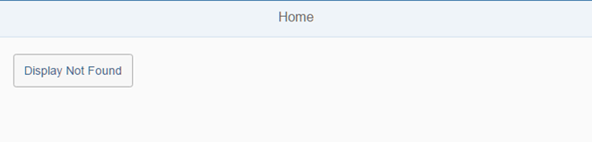

We will display the Not Found target from the previous step without changing the hash to illustrate this navigation pattern. We will also consider a side-effect that prevents us from navigating back in this case.
Fortunately, we can extend our app and offer an easy solution. There are some use cases that should not be persisted in the URL but just be triggered by the application logic if needed. A target is a navigation-related configuration for a view and we can display targets manually without referencing them in a navigation route. Good examples for this are temporary errors, switching to an edit page for a business object, or going to a Settings page. Sometimes you will also have to implement a way back manually.

You can view and download all files in the Samples in the Demo -kit at Routing and Navigation - Step 5.
<mvc:View
controllerName="sap.ui.demo.nav.controller.Home"
xmlns="sap.m"
xmlns:mvc="sap.ui.core.mvc">
<Page title="{i18n>homePageTitle}" class="sapUiResponsiveContentPadding">
<content>
<Button id="displayNotFoundBtn" text="{i18n>DisplayNotFound}" press=".onDisplayNotFound" class="sapUiTinyMarginEnd"/>
</content>
</Page>
</mvc:View>We start by changing the Button control from the home view. When the
button is pressed, the onDisplayNotFound handler is called.
sap.ui.define([
"sap/ui/demo/nav/controller/BaseController"
], function (BaseController) {
"use strict";
return BaseController.extend("sap.ui.demo.nav.controller.Home", {
onDisplayNotFound : function () {
//display the "notFound" target without changing the hash
this.getRouter().getTargets().display("notFound");
}
});
});Inside the onDisplayNotFound handler we get a reference to the
Targets helper object of the router and simply call
display("notFound"). The view associated to the target with the
name notFound from the routing configuration will be displayed by
the router without changing the hash.
The sap.m.routing.Targets object itself can be retrieved by calling
getTargets() on the router. It provides a convenient way for
placing views into the correct containers of your application. The main benefits of
targets are structuring and lazy loading: you just configure the views in the
routing configuration and you do not have to load the views until you really need
them.
In the example code we get a reference to the
sap.m.routing.Targets object by calling
getTargets() on this.getRouter() from the
base controller. However, you could also get a reference to the
sap.m.routing.Targets object by calling
this.getOwnerComponent().getRouter().getTargets() or
this.getOwnerComponent().getTargets().
If you now call the app and press the Display Not Found
button you see that the notFound target is displayed without
changing the URL. That was easy, but suddenly our app's Back
button does not work anymore. The bug we have just introduced illustrates an
interesting navigation trap. The application hash is still empty since we just
display the target and did not hit a route.
When pressing the app's Back button, the
onNavBack from the previous step is called. It detects that
there is no previous hash and therefore tries to navigate to the
appHome route again. The router is smart enough to detect that
the current hash did not change and therefore skips the navigation to the route.
Fortunately, there is an easy workaround for us. However, we need to touch the
Home controller again.
sap.ui.define([
"sap/ui/demo/nav/controller/BaseController"
], function (BaseController) {
"use strict";
return BaseController.extend("sap.ui.demo.nav.controller.Home", {
onDisplayNotFound : function () {
//display the "notFound" target without changing the hash
this.getRouter().getTargets().display("notFound", {
fromTarget : "home"
});
}
});
});
This time we pass on a data object as the second parameter for the display method
which contains the name of the current target; the one from which we navigate to the
notFound target. We decide to choose the key
fromTarget but since it is a custom configuration object any
other key would be fine as well.
sap.ui.define([
"sap/ui/demo/nav/controller/BaseController"
], function (BaseController) {
"use strict";
return BaseController.extend("sap.ui.demo.nav.controller.NotFound", {
onInit: function () {
var oRouter, oTarget;
oRouter = this.getRouter();
oTarget = oRouter.getTarget("notFound");
oTarget.attachDisplay(function (oEvent) {
this._oData = oEvent.getParameter("data"); // store the data
}, this);
},
// override the parent's onNavBack (inherited from BaseController)
onNavBack : function () {
// in some cases we could display a certain target when the back button is pressed
if (this._oData && this._oData.fromTarget) {
this.getRouter().getTargets().display(this._oData.fromTarget);
delete this._oData.fromTarget;
return;
}
// call the parent's onNavBack
BaseController.prototype.onNavBack.apply(this, arguments);
}
});
});Next, we have to register an event listener to the display event of
the notFound target. The best place for us to register an event
listener for this is inside the init function of our
NotFound controller. There we can access and store the custom
data that we are passing on when displaying the target manually.
From the router reference we can fetch a reference to the notFound
target. Each target configuration will create a runtime object that can be accessed
through the router.
Similar to OpenUI5
controls, targets define API methods and events that can be attached. We attach a
display event handler and save the data that was received as the event parameter
data in an internal controller variable
_oData. This data also includes the fromTarget
information in case the caller passed it on. However, we now have to override the
base controller's onNavBack implementation to change the behavior a
bit. We add a special case for our target back functionality in case the
fromTarget property has been passed on. If specified, we simply
display the target defined as fromTarget manually the same way we
actually called the notFound target manually. Otherwise we just
call the base controller's onNavBack implementation.
... DisplayNotFound=Display Not Found
Add the new property to the i18n.properties file.
When we now click the Back button, it works as expected and brings us back to the overview page, also when the Not Found view is displayed manually.
Display targets manually if you want to trigger a navigation without changing the hash
Think carefully about all navigation patterns in your application, otherwise the user might get stuck